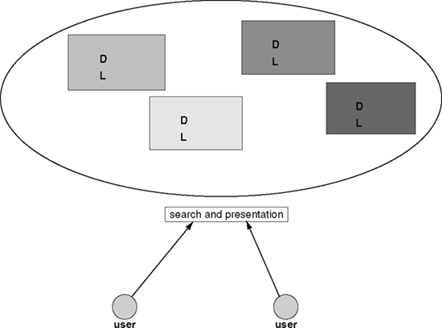

36.
The Past, Present, and Future of Digital Libraries
Howard Besser
Digital libraries will be critical to future humanities scholarship. Not only will they provide access to a host of source materials that humanists need in order to do their work, but these libraries will also enable new forms of research that were difficult or impossible to undertake before. This chapter gives a history of digital libraries. It pays particular attention to how they have thus far failed to incorporate several key elements of conventional libraries, and discusses current and future digital library developments that are likely to provide these missing elements. Developments of concern to humanists (such as preservation, the linking of collections to one another, and standards) are discussed in detail.
Why are Digital Libraries Important to Humanists?
Historically, libraries have been critical to humanities scholarship. Libraries provide access to original works, to correspondence and other commentary that helps contextualize those works, and to previous humanities commentaries.
As we enter the twenty-first century, digital libraries appear to be as critical to humanities scholarship as brick-and-mortar libraries were to scholarship in previous centuries. Not only do digital libraries provide access to original source material, contextualization, and commentaries, but they also provide a set of additional resources and service (many of them closely matching humanities trends that emerged in the late twentieth century).
Digital libraries allow scholars to engage in a host of activities that were difficult or impossible to do before. Libraries, archives, and museums have been gathering together high-quality digital surrogates of original source material from many different repositories so that they appear to be a single repository to users (for example, see the Online Archive of California <http://www.oac.cdlib.org>) or Artstor (<http://www.artstor.org>). Researchers can now consult online facsimiles of rare works residing in a host of different institutions without having to visit each one. Students now have the opportunity to explore facsimiles of rare works and correspondence. Researchers who engage in lexical analysis now have the opportunity to count word/phrase occurrences or do syntactical analysis not just on a single work, but across a whole body of works. Digital libraries permit instructors and repository managers to reflect multiple interpretations of works, authors, or ideas alongside each other – a realization of decentered critical authority, one of the tenets of postmodernism.
But it would be a mistake to see digital libraries as primarily providing ways to access material more quickly or more easily, without having to visit a repository across the country. Though the promise of digital technology in almost any field has been to let one do the same things one did before but better and faster, the more fundamental result has often been the capability of doing entirely new things. It is very possible that digital libraries will enable future humanities scholars to engage in new activities that we haven't yet envisioned.
What is a Library?
Traditionally, libraries have been more than just collections. They have components (including service to a clientele, stewardship over a collection, sustainability, and the ability to find material that exists outside that collection) and they uphold ethical traditions (including free speech, privacy, and equal access). In the last decade of the twentieth century, both technological changes and reduced funding for the public sector led to significant changes in libraries. For the first time in history it became possible to divorce the physical aspects of a library from the (digital) access and services that a library provides. This has led to much discussion of the past and possible future role of libraries, and some speculation as to whether they have a future. In her discussion of why conventional libraries will not disappear simply because we develop online collections, Christine Borgman states that the conventional library's role is to "select, collect, organize, preserve, conserve, and provide access to information in many media, to many communities of users." I have argued, elsewhere, that the four core characteristics of a public library are: that it is a physical place, that is, a focus spot for continuous educational development, that it has a mission to serve the underserved, and that it is a guarantor of public access to information (Besser 1998).
Almost all conventional libraries have a strong service component. All but the smallest libraries tend to have a substantial "public service" unit. Library schools teach about service (from "public service" courses to "reference interviews"). And the public in general regard librarians as helpful people who can meet their information needs. Many libraries also deliver information to multiple clienteles. They are very good at using the same collection to serve many different groups of users, each group incorporating different modalities of learning and interacting, different levels of knowledge of a certain subject, etc. Public libraries serve people of all ages and professions, from those barely able to read, to high school students, to college students, to professors, to blue-collar workers. Academic libraries serve undergraduates who may know very little in a particular field, faculty who may be specialists in that field, and non-native English speakers who may understand detailed concepts in a particular domain, but have difficulty grasping the language in which those concepts are expressed.
Most libraries also incorporate the component of stewardship over a collection. For some libraries, this is primarily a matter of reshelving and circulation control. But for most libraries, this includes a serious preservation function over at least a portion of their collection. For research libraries and special collections, preservation is a significant portion of their core responsibilities, but even school, public, and special libraries are usually responsible for maintaining a core collection of local records and works over long periods of time.
Libraries are organizations that last for long periods of time. Though occasionally a library does "go out of business", in general, libraries are social entities that have a great deal of stability. Though services may occasionally change slightly, people rely on their libraries to provide a sustainable set of services. And when services do change, there is usually a lengthy period when input is solicited from those who might be affected by those changes.
Another key component of libraries is that each library offers the service of providing information that is not physically housed within that library. Libraries see themselves as part of a networked world of libraries that work together to deliver information to an individual (who may deal directly only with his or her own library). Tools such as union catalogues and services such as inter-library loan have produced a sort of interoperable library network that was used to search for and deliver material from afar long before the advent of the World Wide Web.
Libraries also have strong ethical traditions. These include fervent protection of readers' privacy, equal access to information, diversity of information, serving the underserved, etc. (see resolutions of the American Library Association – American Library Association 1995). Librarians also serve as public guardians over information, advocating for these ethical values.
The library tradition of privacy protection is very strong. Librarians have risked serving jail time rather than turn over whole sets of patron borrowing records. Libraries in the USA have even designed their circulation systems to only save aggregate borrowing statistics; they do not save individual statistics that could subsequently be data-mined to determine what an individual had borrowed.
Librarians believe strongly in equal access to information. Librarians traditionally see themselves as providing information to those who cannot afford to pay for that information on the open market. And the American Library Association even mounted a court challenge to the Communications Decency Act because it prevented library users from accessing information that they could access from venues outside the library. Librarians have been in the forefront of the struggle against the privatizing of US government information on the grounds that those steps would limit the access of people who could not afford to pay for it.
Librarians also work to ensure diversity of information. Libraries purposely collect material from a wide variety of perspectives. Collection development policies often stress collection diversity. And librarians pride themselves on being able to offer patrons a rich and diverse set of information.
Librarians are key public advocates for these ethical values. As guardians of information, they try to make sure that its richness, context, and value do not get lost.
As more and more information is available in digital form, a common misperception is that a large body of online materials constitutes a "digital library." But a library is much more than an online collection of materials. Libraries (either digital or brick-and-mortar) have both services and ethical traditions that are a critical part of the functions they serve. The digital collections we build will not truly be digital libraries until they incorporate a significant number of these services and ethical traditions.
Brief Digital Library History
The first major acknowledgment of the importance of digital libraries came in a 1994 announcement that $24.4 million of US federal funds would be dispersed among six universities for "digital library" research (NSF 1994). This funding came through a joint initiative of the National Science Foundation (NSF), the Department of Defense Advanced Research Projects Agency (ARPA), and the National Aeronautics and Space Administration (NASA). The projects were at Carnegie Mellon University, the University of California-Berkeley, the University of Michigan, the University of Illinois, the University of California-Santa Barbara, and Stanford University.
These six well-funded projects helped set in motion the popular definition of a "digital library." These projects were computer science experiments, primarily in the areas of architecture and information retrieval. According to an editorial in D-Lib Magazine, "Rightly or wrongly, the DLI-1 grants were frequently criticized as exercises in pure research, with few practical applications" (Hirtle 1999).
Though these projects were exciting attempts to experiment with digital collections, in no sense of the word did they resemble libraries. They had little or no service components, no custodianship over collections, no sustainability, no base of users, and no ethical traditions. We will call this the "experimental" stage of digital library development (see Table 36.1). Because efforts during this experimental stage were the first to receive such widespread acknowledgment under the term "digital library", they established a popular understanding of that term that has persisted for many years.
Table 36.1 Stages of digital library development
| Stage | Date | Sponsor | What |
|---|---|---|---|
| I Experimental | 1994 | NSF/ARPA/NASA | Experiments on collections of digital materials |
| II Developing | 1998/99 | NSF/ARPA/NASA, DLF/CLIR | Begin to consider custodianship, sustainability, user communities |
| III Mature | ? | Funded through normal channels? | Real sustainable interoperable digital libraries |
By 1996, social scientists who had previously worked with conventional libraries began trying to broaden the term "digital libraries" (Bishop and Star 1996; Borgman et al. 1996). But the real breakthrough came in late 1998 when the US federal government issued their highly funded DL-2 awards (Griffin 1999) to projects that contained some elements of traditional library service, such as custodianship, sustainability, and relationship to a community of users. Also around that time, administrators of conventional libraries began building serious digital components.
As librarians and social scientists became more involved in these digital projects, efforts moved away from computer science experiments into projects that were more operational. We shall call this the "developing" stage of digital libraries. By the late 1990s, particularly under the influence of the US Digital Library Federation, projects began to address traditional library components such as stewardship over a collection and interoperability between collections. But even though digital library developers have made great progress on issues such as real interoperability and digital preservation, these are far from being solved in a robust operational environment. In order to enter the "mature" stage where we can really call these new entities "digital libraries", they will need to make much more progress in moving conventional library components, such as sustainability and interoperability, into the digital realm. And developers need to begin to seriously address how they can move library ethical traditions (such as free speech, privacy, and equal access) into the digital realm as well. The remainder of this chapter examines important efforts to move us in those directions.
Moving to a More User-centered Architecture
Both the early computer science experiments in digital libraries and the earlier initial efforts to build online public access catalogues (OPACs) followed a model similar to that in Figure 36.1. Under this model, a user needed to interact with each digital repository independently, to learn the syntax supported by each digital repository, and to have installed on his or her own computer the applications software needed to view the types of digital objects supported by each digital repository.
So, in order for a user to search Repository A, s/he would need to first adjust to Repository As specialized user interface, then learn the search syntax supported by this repository. (For example, NOTIS-based OPACs required search syntax like A=Besser, Howard, while Inovative-based OPACs required search syntax like FIND PN Besser, Howard.) Once the search was completed, s/he could retrieve the appropriate digital objects, but would not necessarily be able to view them. Each repository would only support a limited number of encoding formats, and would require that the user have specific software installed on their personal computer (such as viewers for Microsoft Word 98, SGML, Adobe Acrobat, TIFF, PNG, JPEG, or specialized software distributed by that repository) in order to view the digital object. Thus users might search and find relevant works, but not be able to view them.
The user would then have to repeat this process with Repository B, C, D, etc., and each of these repositories might have required a different syntax and different set of viewers. Once the user had searched several different repositories, he or she still could not examine all retrieved objects together. There was no way of merging sets. And because different repositories supported different viewing software, any attempt to examine objects from several repositories would likely require going back and forth between several different applications software used for display.
Obviously the model in Figure 36.1 was not very user-friendly. Users don't want to learn several search syntaxes, they don't want to install a variety of viewing applications, and they want to make a single query that accesses a variety of different repositories. Users want to access an interoperable information world, where a set of separate repositories looks to them like a single information portal. A more user-friendly model is outlined in Figure 36.2. Under this model, a user makes a single query that propagates across multiple repositories. The user must only learn one search syntax.
The user doesn't need to have a large number of software applications installed for viewing, and retrieved sets of digital objects may be looked at together on the user's workstation. The model in Figure 36.2 envisions a world of interoperable digital repositories, and is a model we need to strive for.
Over the years, developers have made some significant progress towards the Figure 36.2 model, particularly in the area of OPACs. Web browsers have provided a common "look-and-feel" between different repository user interfaces. The Z39–50 protocols have allowed users to employ a single, familiar search syntax, even when the repository's native search syntax appears foreign. Z39–50 has also promised to let user queries propagate to different repositories. But when one leaves the world of OPACs and enters the world of digital repositories, much work still needs to be done to achieve real interoperability. Most of this work involves creation and adoption of a wide variety of standards: from standards for the various types of metadata (administrative, structural, identification, longevity), to ways of making those metadata visible to external systems (harvesting), to common architectures that will support interoperability (open archives).
General processes and stages of technological development
The automation of any type of conventional process often follows a series of pragmatic steps as well as a series of conceptual stages.
Pragmatic implementation steps usually begin by using technology to experiment with new methods of performing some function, followed by building operational systems, followed by building interoperable operational systems. And at the later stages of this, developers begin trying to make these systems useful for users. We have seen this pattern (experimental systems to operational systems to interoperable systems to useful systems) repeated in the development of OPACs, Indexing and Abstracting services, and image retrieval. The automation of each of these has begun with experiments, followed by implementations that envisioned closed operational systems (with known bodies of users who need to learn particular user interfaces and syntaxes to interact with the system), followed by implementations that allowed the user to more easily interact with multiple systems (and sometimes to even search across various systems). Today's "digital libraries" are not much beyond the early experimental stage, and need a lot more work to make them truly interoperable and user-centered.
The conceptual steps typically include first trying to replicate core activities that functioned in the analogue environment, then attempting to replicate some (but not all) of the non-core analogue functions, then (after using the systems for some time) discovering and implementing new functions that did not exist within the previous analogue environment. Only with this final step do we actually realize the new functional environment enabled by the new technology. So, for example, word processors were initially built as typewriters with storage mechanisms, but over time grew to incorporate functions such as spell-checking and revision-tracking, and eventually enabled very different functions (such as desktop publishing). Our early efforts at creating MARC records began as ways to automate the production of catalogue cards, then moved to the creation of bibliographic utilities and their union catalogues, then to OPACs. Functionally, our OPACs began as mere replicas of card catalogues, then added Boolean searching, then title-word searching capabilities, and now are poised to allow users to propagate distributed searches across a series of OPACs. Today's digital collections are not much past the initial stage where we are replicating the collections of content and cataloguing that existed in analogue form, and just beginning to add minor functions. In the future we can expect our digital libraries to incorporate a variety of functions that employ the new technological environments in ways we can hardly imagine today.
The Importance of Standards
In moving from dispersed digital collections to interoperable digital libraries, the most important activity developers need to focus on is standards. This includes standards and protocols for open archives and metadata harvesting. But most important is the wide variety of metadata standards needed. The most extensive metadata activities have focused on discovery metadata (such as the Dublin Core), but metadata also include a wide variety of other functions: structural metadata are used for turning the pages of a digital book, administrative metadata are used to ensure that all the individual pages of a digital book are kept together over time, computer-based image retrieval systems employ metadata to help users search for similar colors, shapes, and textures, etc. Developers need to widely employ descriptive metadata for consistent description, discovery metadata for finding works, administrative metadata for viewing and maintaining works, structural metadata for navigation through an individual work, identification metadata to determine that one has accessed the proper version of a work, and terms and conditions metadata for compliance with use constraints.
Having consensus over metadata and other standards is important for a variety of reasons. Administrative and longevity metadata are needed to manage digital files over time, to make sure all the necessary files are kept together, and to help view these files when today's application software becomes unusable. Because of the mutability of digital works, developers need standards to ensure the veracity of a work, and to help assure users that a particular work has not been altered, and is indeed the version of the work that it purports to be. And developers need a variety of types of metadata and standards to allow various digital collections to interoperate, and to help users feel that they can search across groups of collections. One side benefit of reaching consensus over metadata that will be recorded in a consistent manner is that vendors will have an economic incentive to re-tool applications to incorporate this metadata (because they can spread their costs over a wide variety of institutions who will want to employ these standards).
The various metadata types
Libraries have had agreements on metadata standards for many decades. The Anglo-American Cataloguing Rules defined a set of descriptive metadata for bibliographic (and later, other) works, and the MARC format gave us a syntax for transporting those bibliographic records. Likewise, Library of Congress Subject Headings and Sears Subject Headings have for many years provided us with discovery metadata to help users find relevant material. In the last quarter of the twentieth century, other types of discovery metadata emerged to serve specialized fields, including the Art and Architecture Thesaurus (AAT) and the Medical Subject Headings (MeSH). Though both AAT and MeSH envisioned use in an online environment, both were developed in an era when indexing and cataloguing records might sit on a computer, but the works they referred to would not. And both were developed at a point in time when the merging of records from these specialized fields with records for more general works was unlikely to take place on a widespread basis.
The rapid acceptance of the World Wide Web led a number of us to consider how one might allow users to search across a variety of online records and resources, particularly when some of those resources received extensive cataloguing, while others received little or none. This led to the March 1995 meeting that defined the Dublin Core as a type of discovery metadata that would allow users to search across a wide variety of resources including both highly catalogued (often legacy) material, and material (much of it new and in electronic form) that was assigned only a minimal amount of metadata. We envisioned the Dublin Core as a kind of unifying set of metadata that would permit discovery across all types of digital records and resources. Library cataloguing records or museum collection management records could be "dumbed down" to look like Dublin Core (DC) records, while DC records for resources like an individual's research paper might either be easy enough for the individual to create, or might even be automatically generated by the individual's word processor. The not-yet-realized promise of the Dublin Core (see next section on Harvesting) was to provide discovery-level interoperability across all types of online indexes and resources, from the highly-catalogued OPACs to the websites and webpages of individuals and organizations. And because the Dublin Core has been in existence for approximately seven years (and has recently been designated as NISO Standard Z39–85), it is more developed and better known than any of the other types of metadata created for electronic resources.
Though the Dublin Core was developed as a form of digital metadata to be applied to works in both digital and non-digital form, a variety of other metadata types have more recently been developed specifically for collections of works in digital form. Below we will briefly discuss efforts to define structural metadata, administrative metadata, identification metadata (particularly for images), and longevity metadata. All these metadata types are critical for moving from a set of independent digital collections to real interoperable digital libraries. Hence they all incorporate functions likely to lead either to increased interoperability, or to the fuller and more robust services that characterize a library rather than a collection.
Structural metadata recognize that, for many works in digital form, it is not enough merely to display the work; users may need to navigate through the work. Structural metadata recognize that users expect certain "behaviors" from a work. For example, imagine a book that is composed of hundreds of digital files, each one the scan of a single book page. Structural metadata are needed for users to perform the normal behaviors they might expect from a book. Users will expect to be able to view the table of contents, then jump to a particular chapter. As they read through that chapter, they will expect to turn the page, and occasionally go back to re-read the previous page. When they come to a citation, they will want to jump to the bibliography to read the citation, then jump back. And when they come to a footnote marker, they may want to jump to where they can read the footnote contents, then jump back. These are all just normal behaviors we expect from any type of book, but these behaviors all require structural metadata. Without them, the book would just be a series of individual scanned pages, and users would have a great deal of difficulty trying to even put the pages in the correct order, let alone read the book. Structural metadata have a role in any kind of material that would benefit from internal navigation (including diaries and journals).
Administrative metadata maintain the information necessary in order to keep a digital work accessible over time. In the case of a digitized book, the administrative metadata would note all the individual files needed to assemble the book, where the files were located, and what file formats and applications software would be necessary in order to view the book or its individual pages. Administrative metadata become particularly important when moving files to a new server, or engaging in activities related to digital longevity such as refreshing or migration.
Instead of employing open standards for structural and administrative metadata, many individuals and organizations choose to encode their documents within commercial products such as Adobe Acrobat. Although this is highly convenient (particularly given the proliferation of Acrobat readers), it could be a dangerous practice for libraries and similar repositories. Commercial products are proprietary, and focus on immediate convenience rather than long-term access. Hence, there is no guarantee of continued compatibility or future access to works encoded in earlier versions of commercial software. In order to cope with long-term preservation and access issues, as well as to provide a higher level of structural functionality, in 1997 a group of US libraries began the Making of America II Project to define structural and administrative metadata standards for library special collection material (Hurley et al. 1999). These standards were further refined within the Technology Architecture and Standards Committee of the California Digital Library (CDL 200la), and have since been renamed the Metadata Encoding and Transmission Standards (METS). METS was adopted by the US Digital Library Federation and is now maintained by the US Library of Congress (<http://www.loc.gov/standards/mets/>). The Research Libraries Group recently announced plans to lead the METS development effort.
Identification metadata attempt to address the proliferation of different versions and editions of digital works. In the print world, the publishing cycle usually both enforced an editorial process and created time lags between the issuance of variant works. But for a highly mutable digital work, those processes and time lags are often eliminated, and variants of the work are created quickly and with very little thought about their impact on what we used to call bibliographic control. In addition, the networked digital environment itself leads information distributors to provide a variety of different forms of a given work (HTML, Postscript, Acrobat, XML, and Microsoft Word forms of documents to support different user capabilities and needs; thumbnail, medium-sized, and large images to support image browsing, viewing, and study).
To illustrate the identification metadata problem, let us turn to Figure 36.3, an illustration of variant forms of images. The original object (a sheep) is shown in the upper left corner. There are four photographs of the original object, taken from three different angles. Two of the photographs (A and D) are taken from the same angle, but photograph D has captured a fly on the side of the sheep. The images to the right of photograph D are variant forms of that photograph after image processing was done to remove the fly from the side of the sheep, while the images below photograph D show variant forms that include the fly. Spread throughout the figure are variant forms including different-sized images (thumbnail to high-resolution), different compression ratios (including both lossy and lossless), and different file encoding formats (PICT, TIFF, JFIF). Certain users may only want particular resolutions or compression ratios (e.g., a serious researcher may require an uncompressed high-resolution image). All the images illustrated in this figure share a base set of metadata that refer to the initial object of origin (the sheep), and adapting Leazer's idea of Bibliographic Families (Leazer and Smiraglia 1999), we can say that all the images in this illustration form an "Image Family" which shares a common set of metadata. Each image instantiation in the family also inherits metadata from its parents, and knowledge about that inheritance can often be critical to someone viewing a particular instantiation (for example, someone using one of the lower-right corner instantiations to study wool characteristics should be able to ascertain that image processing was done on a parent or grandparent of this image [to remove the fly], and that this image processing might affect the matting of the wool). Thus, it is critical that any image inherits important metadata from its lineage, or that systems at least provide ways that a researcher can trace upwards in lineage to discover metadata that might affect their use of the work. A first step in this direction is in the US National Information Standards Organization efforts at creating a Technical Imaging Metadata Standard that incorporates "change history" and "source data" (NISO 2002). But our community has much more work to do in order to provide the type of identification of variant forms that users (particularly researchers) have come to expect from libraries of analogue materials. And we still need to come to grips with the problem of how to preserve dynamic documents – documents that are essentially alive, and changing on a daily basis.
As digital library developers construct large collections of material in digital form, we need to consider how digital works will provoke changes in long-standing practices that have grown up around analogue works. Elsewhere this author has outlined how electronic art will likely provoke changes in conservation and preservation practices (Besser 200la) and how the growing body of moving image material in digital form is beginning to reshape the role of film archives and archivists (Besser 200Ib). But at a very pragmatic level, all repositories of digital works need to worry about the persistence of those works over time. Longevity metadata are necessary in order to keep digital material over long periods of time. While saving bits may be fairly straightforward, saving digital works is not. Digital works are very fragile, and pro-active steps need to be taken in order to make sure that they persist over time (for more on this subject, see the Digital Longevity website maintained by this author at <http://sunsite.berkeley.edu/Longevity>). Elsewhere, I have outlined five key factors that pose digital longevity challenges (the Viewing Problem, the Scrambling Problem, the Interrelation Problem, the Custodial Problem, and the Translation Problem), and have suggested that community consensus over metadata can be a key factor in helping digital works persist over time (Besser 2000). Recently, the major US bibliographic utilities have begun serious efforts to reach consensus on preservation metadata for digital works (OCLC/RLG 2001a, 2001b). Widespread adoption of this type of standard will make the challenge of digital persistence much more tractable. And late in 2001 the Library of Congress, with the help of the Council on Library and Information Resources, began a planning process for a National Digital Information Infrastructure and Preservation Program (see <http://www.digitalpreservation.govndiipp/>). Widespread support for the emerging metadata standards mentioned here will greatly improve interoperability between collections and the sustainability of those collections over time. This will help us move away from isolated experiments with digital collections towards sustainable digital libraries.
Figure 36.3 Image families
Metadata philosophies and harvesting: Warwick vs. MARC
Though agreement on a variety of metadata standards is a necessary prerequisite for interoperable digital collections, implementation of interoperability also requires a set of architectures and a common approach to making that metadata available to other collections, middleware, and end users. In this section we will discuss two philosophical approaches to metadata, as well as methods for sharing metadata with applications and individuals outside the designer's home collection.
Libraries have traditionally employed the MARC/AACR2 philosophical approach to metadata. This approach employs a single overarching schema to cover all types of works and all groups of users. As new types of works arise, new fields are added to the MARC/ AACR2 framework, or rules for existing fields are changed to accommodate these new works. And as communities emerge with new metadata needs, these are also incorporated into the existing schema. The MARC/AACR2 philosophy maintains that one big schema should serve all user needs for all types of works. Critics of this approach point out that the schema has become so overly complex that only highly trained specialists (library cataloguers) are able to assign metadata using it, and that the system is too slow to adapt to emerging types of works. They also claim that groups of users often have sets of metadata needs that the controllers of MARC/AACR2 are unwilling to accommodate.
In recent years, a rival philosophy has emerged from within the Dublin Core community. This philosophy, based upon the Warwick Framework, relies upon interlocking containers and packages of metadata, each maintained by a particular community. According to this philosophy, each community can support the packages of metadata it needs for its own particular uses, while still interoperating with the metadata packages from other communities. Under this philosophy, the Dublin Core serves as a unifying set of metadata to allow discovery across all communities. And even within the Dublin Core (DC), certain communities can employ qualifiers that meet their own detailed needs, while still providing useful metadata to other communities. (For example, the library community could use qualifiers to reflect the nuances of differences between main title, alternate title, transliterated title, and translated title, while other communities could find any of these as part of a search under unqualified title.) This philosophy supports metadata packages that are modular, overlapping, extensible, and community-based. Advocates believe that they will aid commonality between communities while still providing full functionality within each community. This approach is designed for a networked set of communities to interrelate to one another.
No matter which philosophical approach one follows, any collection faces the pragmatic issue of how to make their metadata available to other collections and external searching software. The traditional library model was to export MARC records to a bibliographic utility (like OCLC or RLIN) and to have all external users search through that utility. While this works fine for MARC-based records, increasingly users want to search across a much wider base of information from a world not circumscribed by bibliographic records (such as web pages and sites, PDF documents, images, databases, etc.). Therefore, most digital collections are beginning to consider how to export reduced records into a space where they can be picked up by Internet search engines. For records following the MARC/AACR2 approach, this means extracting simple records (probably in DC format) from complex MARC records, and exporting these. For both the Warwick and the MARC/AACR2 approaches, this means developing methods for metadata harvesting that allow the appropriate exported records to be found by Internet search engines. A number of projects are currently under way to test metadata harvesting.
Best practices
Along with standards and architectures, community agreement on best practices is another important ingredient in helping make collections of digital materials more interoperable and sustainable. Best practices ensure that content and metadata from different collections will meet minimum standards for preservation purposes, and that users can expect a baseline quality level.
A key best practice principle is that any digital project needs to consider users, potential users, uses, and actual characteristics of the collections (Besser and Trant 1995). This means that decision-making both on digital conversion of analogue material and on metadata assignment needs to be carefully planned at the start of a digital project. The pioneering best practices for digital conversion developed by the Technology Architecture and Standards Committee of the California Digital Library (CDL 2001b) introduced important concepts designed to aid in the longevity and sustainability of digital collections. These concepts included differentiating between masters and derivatives, inclusion of greyscale targets and rulers in the scan, using objective measurements to determine scanner settings (rather than matching the image on a nearby monitor to the original object), storing in common formats, and avoiding compression (particularly lossy compression). This document also suggested that collections strive to capture as much metadata as is reasonably possible (including metadata about the scanning process itself). The relationship of best practices for scanning to the longevity of digital works is more fully explained in the Digital Library Federation's draft benchmarks for digital reproductions (DLF 2001).
The Making of America II Project (Hurley et al. 1999) introduced the idea that metadata could begin in fairly raw form, and, over time, move toward being seared and eventually cooked. This notion of incrementally upgrading metadata appears to have assuaged the fears of some groups that metadata schemes like METS were too overblown and complicated for them to undertake. In effect, this notion appears to have increased the adoption level of more complicated metadata schemes.
Other standards issues
A number of other standards issues need to be addressed in order to bring interoperability and other conventional library services to our emerging digital libraries. These include open archives, metadata harvesting, persistent identification, helping users find the appropriate copy, and user authentication.
Metadata stored in local systems are often not viewable by external applications or users that may be trying to discover local resources. This seriously inhibits interoperability, and the ability of a user to search multiple collections. The Open Archives Initiative (<http://www.openarchives.org/>) is tackling this problem by developing and testing interoperability protocols that will allow applications to harvest metadata, even those residing in deep archives. The success of a project like this is critical to providing users with the type of access outlined in Figure 36.2. In addition, this project's focus on e-print archives should provide users with a diverse body of content free of onerous constraints.
Persistent naming is still an important issue for building real digital libraries. Though the World Wide Web has brought us increased access to works, Web architecture has violated traditional library practices of providing relative location information for a work by instead providing a precise location address. Failures in the Web's precise location-addressing system (the URL) produce the most common error message that Web users encounter: 404 – File Not Found. Most of these error messages result from normal maintenance of a website (renaming higher-order folders or directories, re-organizing file locations). Librarians would never consider telling a user that to find the book they're seeking they must go to the third tier of the stacks, in the eighth row, the fifth bookcase, the third shelf, and grab the seventh book from the left; they know that once someone removes the third book from the left, the entire system of locating will break down. Yet, this is the type of system that URLs are based upon. In recent years there has been much work done on indirect naming (in the form of PURLS, URNs, and handles). But to replicate the power that libraries have developed, we need truly persistent naming. This means more than just the indication of a location for a particular work. Sophisticated persistent naming would include the ability to designate a work by its name, and to distinguish between various instantiations of that work and their physical locations. Just as conventional libraries are able to handle versions and editions and direct users to particular copies of these, our digital libraries will need to use identification metadata to direct users to an appropriate instantiation of the work they are seeking.
Ever since the advent of indexing and abstracting services, conventional libraries have had to face the problem of answering a user's query with a list of works, some of which may not be readily available. Conventional libraries have striven to educate users that some sources are not physically present in the library, and they have also developed both interlibrary loan and document delivery services to help get material to users in a timely fashion. But the recent proliferation of licensed full-text electronic resources has greatly complicated this problem. For a variety of reasons, it may be very difficult to match a user with an appropriate document they are licensed to use: certain users may be covered by a given license while others are not; the same document may be provided by several aggregators under different licenses; much of the online content is physically stored by the licensor (content provider) rather than by the licensee (library). Recent standardization efforts have begun to address part of this problem; the US National Information Standards Organization has formed the OpenURL Standard Committee AX (<http://www.niso.org/commitax.html>) to allow a query to carry context-sensitive information. This will help a library authenticate their licensees to a remote content site. But there are still many more problems to solve in getting users appropriate copies (particularly when content licenses are complex and overlapping).
Still another critically important standards and protocols area that is under development is that of authentication of users. With more and more licensed content being physically stored by content providers, those providers want assurances that users accessing the content are indeed covered by valid licenses to do so. Yet conventional methods of user authentication (such as password or IP addressing) would allow content providers to track what an individual reads, and develop complex profiles of user habits. Legal scholars have warned of the dangers this poses (Cohen 1996), and it flies in the face of the important library ethical tradition of privacy. Work has begun on a project that lets an institution authenticate users to a resource provider without revealing individual identities. It still remains to be seen whether the Shibboleth project (<http://middleware.in-ternet2.edu/shibboleth/>) will be acceptable to resource providers, yet still provide the privacy and anonymity that libraries have traditionally assured users. Success becomes more questionable in the wake of the September 11, 2001, US building destructions, as the US federal government has increased the pressure to eliminate anonymous library access (ALA et al. 2001).
The Next Stage: Moving from Isolated Digital Collections to Interoperable Digital Libraries
Conventional libraries have both functional components and ethical traditions. The digital collections currently under construction will not truly be "digital libraries" until they incorporate a significant number of the components of conventional libraries, and adhere to many of the important ethical traditions and values of libraries. And though our digital collections have made significant progress in these areas in the past seven years, they still have a long way to go.
For the component of interoperability, projects such as open archives, metadata harvesting, and structural and administrative metadata hold great promise. For the component of stewardship over collections, digital preservation projects have finally begun, but it will be some time before we will be able to say with confidence that we can preserve the portion of our culture that is in digital form. Additionally, developers have only recently begun to grapple with the issue of economic sustainability for digital libraries (CLIR 2001). For other components such as service to clientele, they have barely scratched the surface in one important area where conventional libraries perform very well – delivering information to different groups of users (by age level, knowledge base, particular need, etc.) in ways appropriate to each group. The California Digital Library and the UCLA/ Pacific Bell Initiative for 21st Century Literacies have recently completed a project to explore this problem (<http://www.newliteracies.gseis.ucla.edu/design/>).
Those constructing digital collections have spent less energy trying to build library ethical traditions into our systems, and in many cases have relied on those outside the digital library community (such as the American Library Association filing lawsuits on privacy and free speech, or the Internet Engineering Task Force developing protocols to preserve privacy) to work on upholding library ethical traditions such as free speech, privacy, and equal access. But as Lawrence Lessig has made clear, the choices we make in the architecture and design of our systems will limit the social choices we can make around use of those systems in the future (Lessig 1999). For example, some of our online public-access circulation systems purposely saved only aggregate user data so that no one in the future could attempt to track individual reading habits. While recent projects such as Shibboleth are trying to design library ethical traditions into the technological infrastructure, the digital libraries we're building still have not addressed many of our important library ethical traditions.
As designers build digital collections they will also need to uphold library ethical traditions of equal access and diversity of information. Both of these are threatened by the commercialization of intellectual property. As we see the increased commodification of information and consolidation of the content industry into fewer and fewer hands, less and less creative work enters the public domain and more requires payment to view (Besser 2002a). Commodification and consolidation also bring with them a concentration on "best-seller" works and a limiting of diversity of works (Besser 1995, 1998). The builders of digital collections need to go beyond content that is popular and become aggressive about collecting content that reflects wide diversity; instead of using the now-familiar opportunistic approach to converting content to digital form, they will need to develop carefully planned digital collection development policies. Developers will find that they need to closely collaborate with others both to leverage resources, and to ensure that the efforts of different organizations together look like virtual digital libraries to our users. Developers and scholars also need to be involved in these efforts, to ensure that a broad range of content eventually leaves the marketplace and enters the public domain. We need to involve ourselves in struggles such as the American Library Association's current effort to build a coalition to protect the "information commons" in cyberspace.
Digital library developers also will find that they need to maintain the role of the library as guardian over individuals' rights to access a rich variety of information, and to see that information within its context. They will need to continue to be vigilant about making sure that other forms of "equal access to information" extend to the new digital world. They would also do well to extend the "library bill of rights" into cyberspace, and they will find themselves having to struggle to keep the digital world from increasing the distance between "haves" and "have-nots."
Finally, in the move towards constructing digital libraries, we need to remember that libraries are not merely collections of works. They have both services and ethical traditions and values that are a critical part of their functions. Libraries interoperate with each other to serve the information needs of a variety of different user groups today, and expect to sustain themselves and their collections so that they can serve users 100 years from now. They defend their users' rights to access content, and to do so with some degree of privacy or anonymity. The digital collections being built will not truly be digital libraries until they incorporate a significant number of these services and ethical traditions.
Acknowledgments
Extensive portions of this chapter were previously published in the online journal First Monday as "The Next Stage: Moving from Isolated Digital Collections to Interoperable Digital Libraries" (Besser 2002c) and in the Victorian Association for Library Automation's E-Volving Information Futures 2002 conference proceedings (Besser 2002a). This chapter also involves a synthesis of a number of different talks and workshops the author delivered between 1996 and 2002, and he wishes to thank the many individuals who offered critical comments or encouragement after those presentations.
References
American Library Association (1995). American Library Association Code of Ethics adopted by the ALA Council on June 28, 1995. At http://www.ala.org/alaorg/oif/ethics.html.
American Library Association et al. (ALA) (2001). Library Community Statement on Proposed Anti-Terrorism Measures (October 2). At http://www.ala.org/washoff/.
Besser, Howard (1995). From Internet to Information Superhighway. In James Brook and Iain A. Boal (eds.), Resisting the Virtual Life: The Culture and Politics of Information (pp. 59–70). San Francisco: City Lights.
Besser, Howard (1997). The Changing Role of Photographic Collections with the Advent of Digitization. In Katherine Jones-Garmil (ed.), The Wired Museum (pp. 115–27). Washington: American Association of Museums.
Besser, Howard (1998). The Shape of the 21st Century Library. In Milton Wolf et al. (eds.), Information Imagineering: Meeting at the Interface (pp. 133–46). Chicago: American Library Association.
Besser, Howard (2000). Digital Longevity. In Maxine K. Sitts (ed.), Handbook for Digital Projects: A Management Tool for Preservation and Access (pp. 155–66). Andover, MA: Northeast Document Conservation Center.
Besser, Howard (2001a). Longevity of Electronic Art. In David Bearman and Franca Garzotto (eds.), ICHIM 01 International Cultural Heritage Informatics Meeting: Cultural Heritage and Technologies in the Third Millennium, vol. 1: Full Papers. Proceedings of the September 3–7, 2001, Milan Meeting (pp. 263–75). Milan: Politecnico di Milano.
Besser, Howard (2001b). Digital Preservation of Moving Image Material. The Moving Image (Fall): 39–55.
Besser, Howard (2002a). Moving from Isolated Digital Collections to Interoperable Digital Libraries. In Victorian Association for Library Automation's E-Volving Information Futures. Proceedings of the 11 Biennial Conference, 6–8 February, 2002, Melbourne, vol. 2 (pp. 707–25).
Besser, Howard (2002b). Commodification of Culture Harms Creators. Information Commons website by Ameri can Library Association. At http://www.infocommons.org. http:///gseis.ucla.edu/~howard/Copyright/ala-commons.html.
Besser, Howard (2002c). The Next Stage: Moving from Isolated Digital Collections to Interoperable Digital Libraries. First Monday 7, 6 (June). At http://www.firstmonday.org/issues/issue7_6/besser/.
Besser, Howard (website). Digital Longevity. At http://sunsite.berkeley.edu/Longevity/.
Besser, Howard and Jennifer Trant (1995). Introduction to Imaging: Issues in Constructing an Image Database. Santa Monica: Getty Art History Information Program.
Bishop, Ann and Susan Leigh Star (1996). Social Informatics for Digital Library Use and Infrastructure. In Martha Williams (ed.), Annual Review of Information Science and Technology 31 (pp. 301–401). Medford, NJ: Information Today.
Borgman, Christine (1997). Now that We Have Digital Collections, Why Do We Need Libraries? In Candy Schwartz and Mark Rorvig (eds.), ASIS '97: Proceedings of the 60th ASIS Annual Meeting, vol. 34. Medford, NJ: Information Today.
Borgman, Christine, et al. (1996). Social Aspects of Digital Libraries, Final Report to the National Science Foundation. Digital Libraries Initiative. At http://dli.grainger.uiuc.edu/national.htm.
California Digital Library (CDL) (2001a). Technology Architecture and Standards Committee (May 18), California Digital Library Digital Object Standard: Metadata, Content and Encoding. California Digital Library. At http://www.cdlib.org/about/publications/.
California Digital Library (2001b). Best Practices for Image Capture. California Digital Library (February). At http://www.cdlib.org/about/publications/.
CLIR (2001). Building and Sustaining Digital Collections: Models for Libraries and Museums (August). Council on Library and Information Resources (CLIR). At http://www.clir.org/pubs/reports/publ00/publ00.pdf.
Cohen, Julie (1996). A Right to Read Anonymously: A Closer Look at "Copyright Management" in Cyberspace. Connecticut Law Review 28: 981–1039.
Digital Library Federation (DLF) (2001). Draft Benchmark for Digital Reproductions of Printed Books and Serial Publications (July). At http://www.diglib.org/standards/draftbmark.htm.
Digital Preservation and Archive Committee (DPAC) (2001). Draft Final Report (October 8).
Griffin, Stephen M. (1999). Digital Libraries Initiative – Phase 2: Fiscal Year 1999 Awards, D-Lib Magazine 5, 7–8 (July/August). At http://www.dlib.org/dlib/july99/07griffin.html.
Hirtle, Peter (1999). A New Generation of Digital Library Research. Editorial. D-Lib Magazine 5, 7–8 (July/August). At http://www.dlib.org/dlib/july99/07editorial.html.
Hurley, Bernard, John Price-Wilkin, Merrillee Proffitt, and Howard Besser (1999). The Making of America II Testbed Project: A Digital Library Service Model. Council on Library and Information Resources. Digital Library Federation (December). At http://sunsite.berkeley.edu/moa2/wp-v2.html.
Leazer, Gregory and Richard Smiraglia (1999). Bibliographic Families in the Library Catalogue: A Qualitative Analysis and Grounded Theory. Library Resources and Technical Services 43, 4 (October).
Lessig, Lawrence (1999). Code and Other Laws of Cyberspace. New York: Basic Books.
McClure, Charles et al. (1987). Planning and Role Setting for Public Libraries (figure 11). Chicago: American Library Association.
National Information Standards Organization (NISO) (2002). Standards Committee AU. Data Dictionary – Technical Metadata for Digital Still Images (June 1). At http://www.niso.org/standards/resources/Z39_37_trial_use.pdf.
National Science Foundation (NSF) (1994). NSF Announces Awards for Digital Libraries Research; $24.4 Million to Fund Advanced Research and Technology Development by Teams from Universities, Industries and Other Institutions (September). At http://elib.cs.berkeley.edu:80/admin/proposal/nsf-press-release.html.
OCLC/RLG Working Group on Preservation Metadata (2001a). Preservation Metadata for Digital Objects: A Review of the State of the Art (January 31). At http://www.oclc.org/digitalpreservation/presmeta_wp.pdf.
OCLC/RLG Working Group on Preservation Metadata (2001b). A Recommendation for Content Information (October). At http://www.oclc.org/research/pmwg/contentinformation.pdf.

Figure 36.1 "Traditional" digital collection model

{kind=link}
Figure 36.2